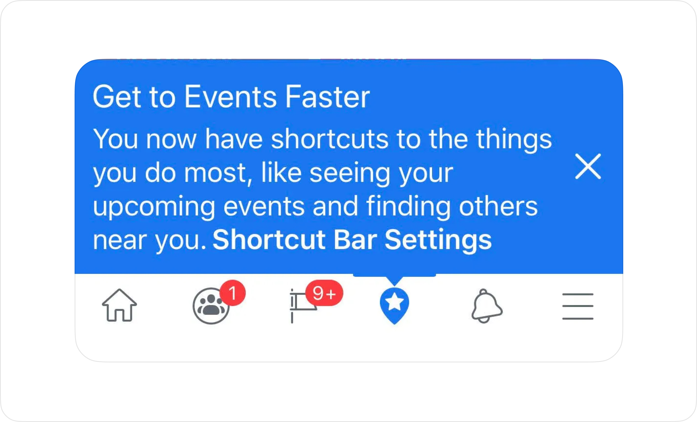

Daniel Park – August 14, 2024
You'll never catch me intentionally designing an app with a tab bar. It's my least favorite interface paradigm.
Traditional tab bar interface pattern
Not all tabs are bad.
I'm not against tab-like navigational patterns. Tabs that allow a user to navigate the same set of information more quickly through categorization is extremely useful – like this business card rolodex.
Business card rolodex
What I have a problem with are tab bars that represent entirely new spaces of contexts. The tab bar is no longer a filtering of context, but a pathway to entirely new contexts and spaces.
Interfaces are like your home.
With your fingers, count the number of two-story homes where the staircase wasn't visible from the front entrance. I'm willing to bet you couldn't get past one hand.